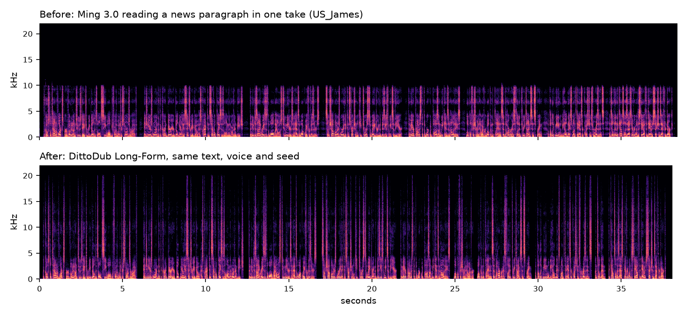
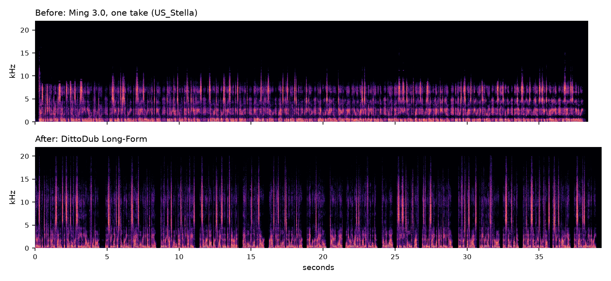

DittoDub Long-Form
Long-form speech with Ming 3.0 TTS on Apple silicon, by DittoDub. Every pair below uses the same text, voice and seed; nothing is post-processed. Code and install.
One paragraph, one take
Reading a whole paragraph in one go, Ming 3.0 can lock into a narrow, hollow sound in the first seconds, drift into a muffled tone by the end, and skip or repeat words. DittoDub Long-Form keeps the full voice and its place in the text. Before: Ming 3.0 with its position limit raised so the paragraph fits in one take, guidance 0.5, no other changes.
News report, US_James

Essay, US_Stella

An argument, US_Emma: listen to how it ends
A cloned voice from an 8-second clip
A four-minute reading
Ming 3.0's own long-text mode cuts the text into fragments of a sentence or two and reads each one separately. DittoDub Long-Form reads each paragraph in one continuous take and decodes the whole reading as one audio stream. Both are about equally accurate (about 1% word errors); the difference is in how it sounds: delivery that carries through a paragraph, and fewer cracked syllables.
UK_George, six paragraphs
US_Emma, six paragraphs
| 4-minute reading | Ming 3.0 default | DittoDub Long-Form |
|---|---|---|
| Sudden pitch breaks per voiced minute (George / Emma / Stella) | 31.1 / 5.7 / 23.3 | 7.4 / 1.6 / 20.2 |
| Word error rate | 0.8-1.6% | 0.7-1.8% |
| Context | restarts every sentence or two | one take per paragraph |
Cracked syllables
Guidance on the last, fine-detail steps of each audio frame makes some syllables crack. DittoDub Long-Form guides only the first six of ten steps.